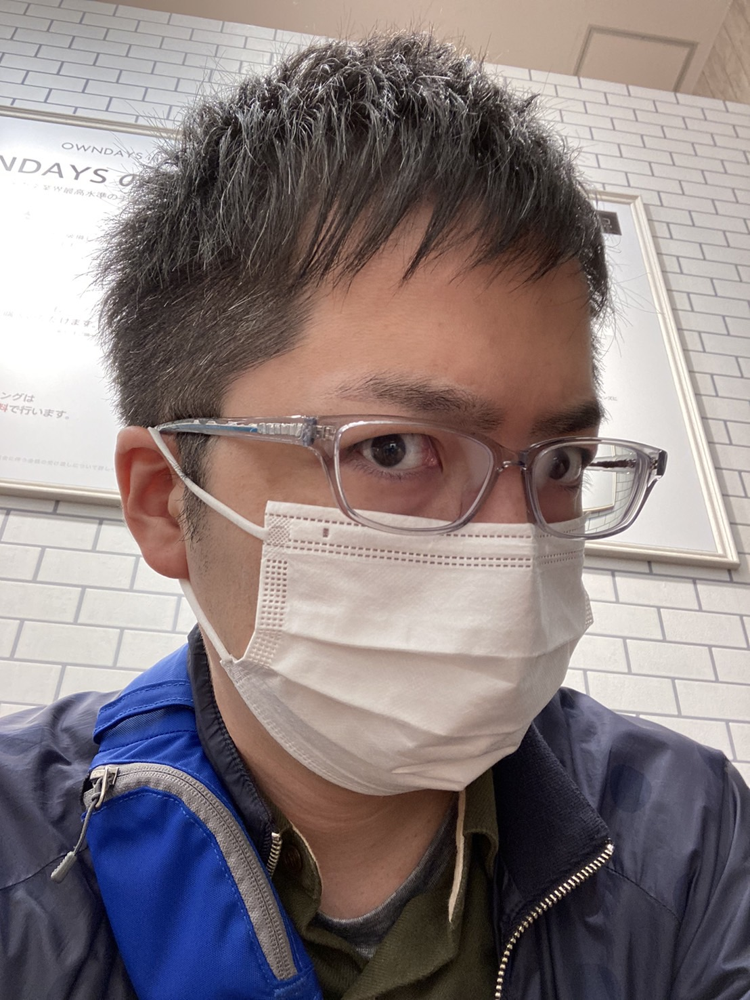

Kei.T

Summary
After graduating from university, I worked as a systems engineer for ten years. I'm currently a local government official and studying to become an AI engineer.
Education
- Bachelor of Arts in Economics, 2006, Tokyo International University
Work Experience
Systems Engineer
aa
Chamber of Commerce
bbb
Local Government Official
bbb
Skills
Awards and Certifications
- Fundamental Information Technology Engineer Examination (National qualifications in Japan)
- Applied Information Technology Engineer Examination (National qualifications in Japan)
- Information Security Specialist Examination (National qualifications in Japan)
Others